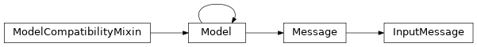
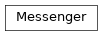
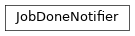

cxworker.comm¶Package with sockets/greenlets communication helpers.
InputMessage:
Message informing the runner about a job being ready to be processed.DoneMessage:
Message informing cxworker.shepherd.Shepherd about a finished job.ErrorMessage:
Message informing cxworker.shepherd.Shepherd about an encountered error.Messenger:
Static helper class for sending and receiving messages through zmq sockets.JobDoneNotifier:
Simple notifier build over green zmq PUB-SUB sockets.cxworker.comm.InputMessage(raw_data=None, trusted_data=None, deserialize_mapping=None, init=True, partial=True, strict=True, validate=False, app_data=None, lazy=False, **kwargs)[source]¶Bases: cxworker.comm.messages.Message
Message informing the runner about a job being ready to be processed.
io_data_root = <StringType() instance on InputMessage as 'io_data_root'>¶Job data root (with inputs and outputs folders).
cxworker.comm.DoneMessage(raw_data=None, trusted_data=None, deserialize_mapping=None, init=True, partial=True, strict=True, validate=False, app_data=None, lazy=False, **kwargs)[source]¶Bases: cxworker.comm.messages.Message
Message informing cxworker.shepherd.Shepherd about a finished job.
cxworker.comm.ErrorMessage(raw_data=None, trusted_data=None, deserialize_mapping=None, init=True, partial=True, strict=True, validate=False, app_data=None, lazy=False, **kwargs)[source]¶Bases: cxworker.comm.messages.Message
Message informing cxworker.shepherd.Shepherd about an encountered error.
long_error = <StringType() instance on ErrorMessage as 'long_error'>¶Longer error message (e.g.: stacktrace).
short_error = <StringType() instance on ErrorMessage as 'short_error'>¶Human-readable short error message.
cxworker.comm.Messenger[source]¶Bases: object
Static helper class for sending and receiving messages through zmq sockets.
recv(socket, expected_message_types=None)[source]¶Receive, decode and return a message from the given socket.
| Parameters: | |
|---|---|
| Raises: |
|
| Return type: |
|
send(socket, message, response_to=None)[source]¶Encode the given image and send it to the given socket.
| Parameters: |
|
|---|---|
| Raises: |
|
| Return type: |
|
cxworker.comm.JobDoneNotifier[source]¶Bases: object
Simple notifier build over green zmq PUB-SUB sockets.
Notifier allows to spawn greenlets waiting for arbitrary conditions which are tested only when the notify method is called.
MessageError:
Inappropriate argument value (of correct type).UnexpectedMessageTypeError:
Inappropriate argument value (of correct type).